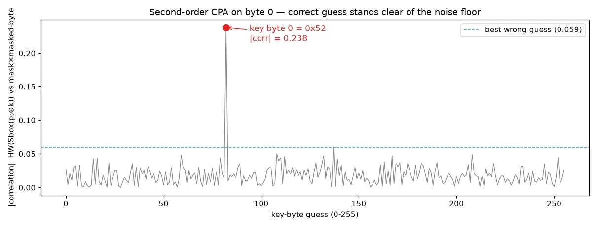

01Start point: the handout, emanation.zip
- What I did: unzipped it and compared its SHA-256 with the brief. It did not match (0937...b6a4, 1,793,415 bytes against f1d1...c03f, 1,793,377 bytes), so I loaded the arrays with allow_pickle=False, since a .npy file can carry pickled objects that run code on load.
- What I found: plaintexts.npy (8000 x 16 bytes), traces.npy (8000 x 56 float samples), sealed_order.hex (43 bytes) and a README. It describes Hamming-weight leakage plus noise from an AES-128 first round, two countermeasures (a random delay and a fresh random byte mask per trace), and the order sealed with AES-128-CTR from an all-zero counter block.
- Thinking: a random delay puts the same operation on a different sample in every trace, so I had to line the traces up before any correlation could work.
02Pivot: the marker spike gives away the delay
- What I found: every trace has exactly one large spike (about 25, far above every other sample) somewhere in samples 0 to 16, at a different spot in each trace.
- Thinking: a spike that size is a fixed event in the computation, so its position is the random delay itself.
- What I did: shifted each trace so the spike sits at index 0, which re-aligns all 8000 traces.
- Result: offsets 3, 5, ..., 35 now hold 17 samples with mean 4 and std about 1.73, which is the Hamming weight of a random byte (mean 4, variance 2) plus unit-variance noise. The even offsets are pure noise. That is 17 leak samples for 16 key bytes.
03Pivot: a second-order product cancels the mask
- Thinking: first-order CPA can't work here. Each state byte leaks as HW(Sbox(p ^ k) ^ m) with a fresh random m, so one sample on its own says nothing about the key. But the mask also leaks in its own sample as HW(m), and the centered product of the mask sample and a masked-byte sample does depend on HW(Sbox(p ^ k)) (negatively, for a Hamming-weight model). That is the classic second-order centered-product attack.
- What I did: to find the mask slot, I tried each of the 17 slots as the mask against every other slot and every key byte.
- What I found: slot 0 scored 3.79 against about 0.87 for every other slot, so slot 0 is HW(m) and slots 1 to 16 are the 16 masked bytes, in byte order.
- Result: for each byte the right guess correlates at about 0.24 while the best wrong guess stays below 0.08. The key is 52cc11fc4a2ecfc066e3349f4af9fdea.

04Flag: decrypting the sealed order
- What I did: decrypted sealed_order.hex with AES-128-CTR under the recovered key and an all-zero counter block.
- Result: CSCTF{relay_order_55a10bd8f06393bcc1ae8065}
- Thinking: readable plaintext in the flag format checks all 16 key bytes at once, because a single wrong key byte would change the whole keystream.